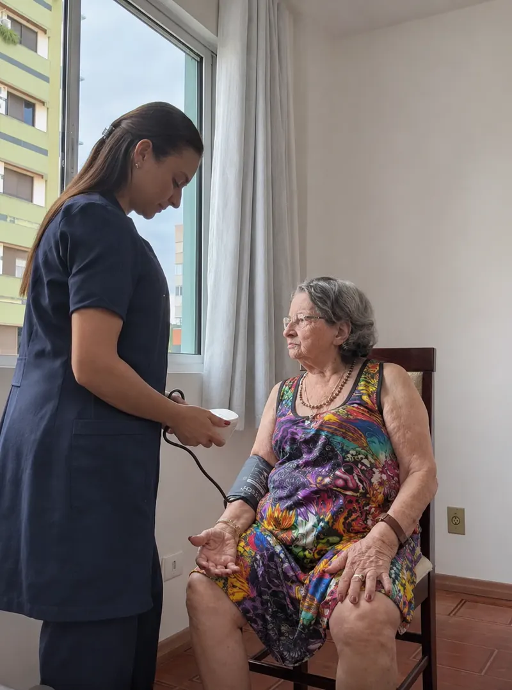
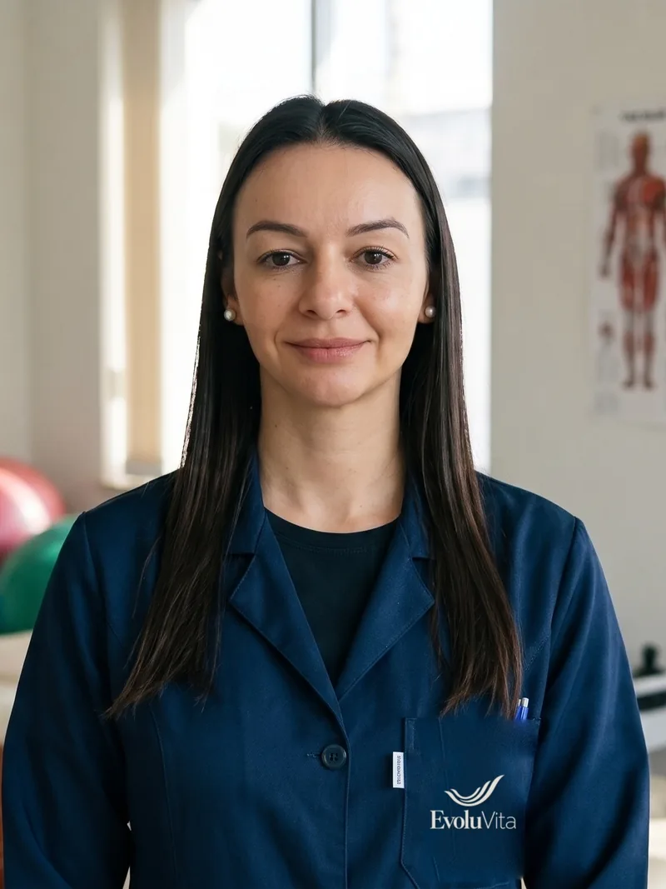
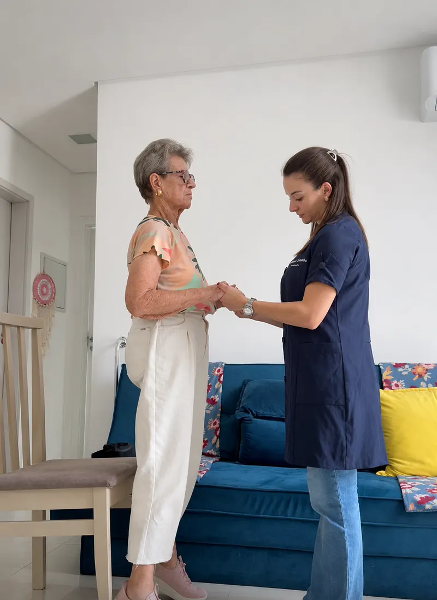
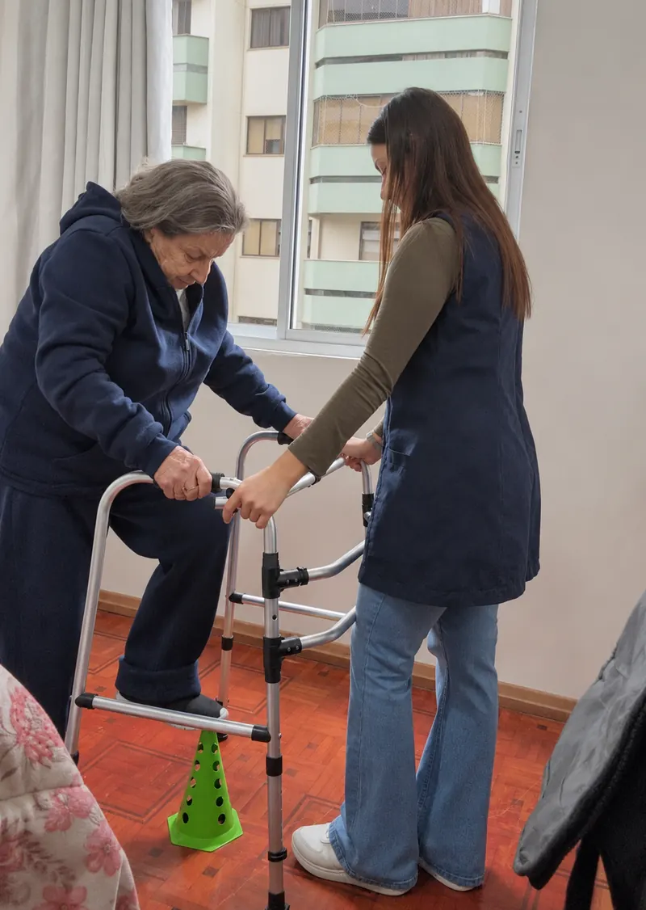
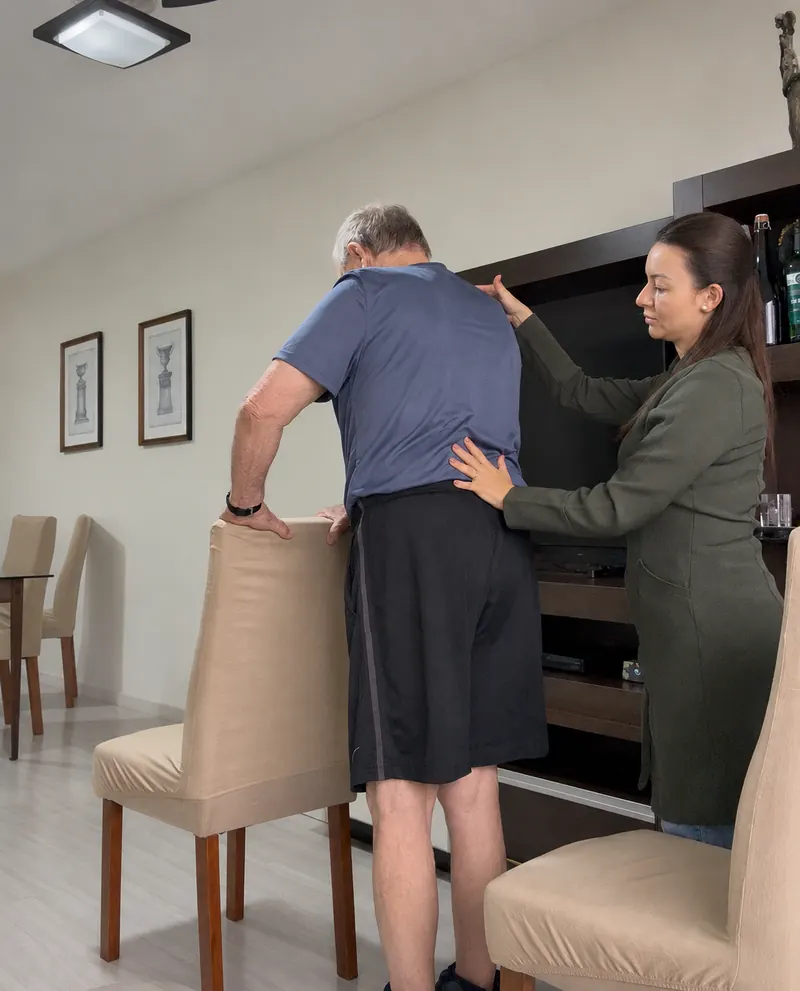
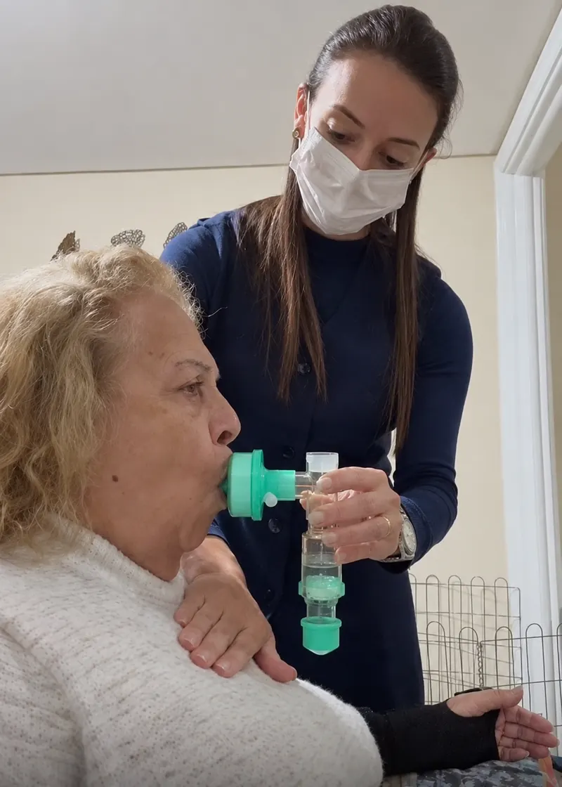
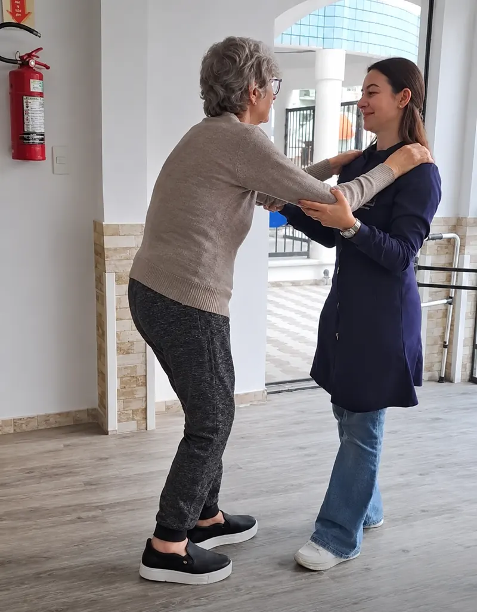
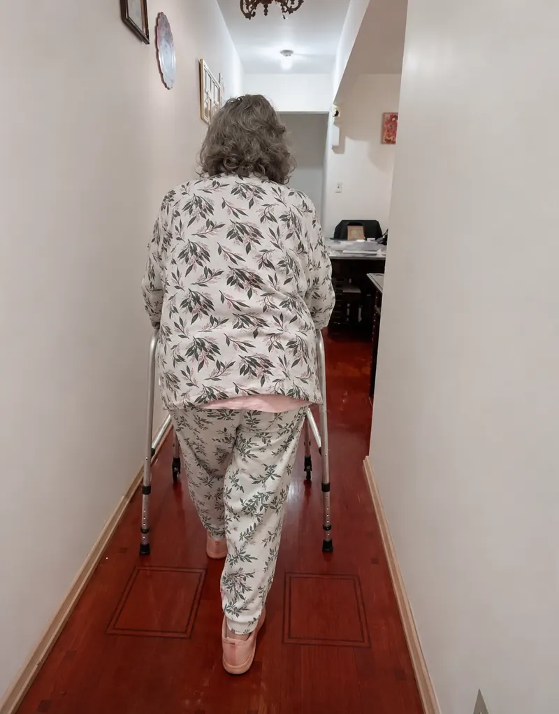

Pós-internação
Avaliação e reabilitação de perdas funcionais após períodos de internação e inatividade.
Conversar sobre issoFisioterapia domiciliar para pessoas idosas
Avaliação específica, plano individualizado e acompanhamento próximo da família, respeitando o ritmo e as possibilidades de cada pessoa.
Balneário Camboriú · Camboriú · Itajaí
Quando procurar
Muitas famílias percebem pequenas mudanças antes de qualquer diagnóstico: mais insegurança para andar, dificuldade para levantar da cadeira, cansaço novo. Uma avaliação ajuda a entender o que está acontecendo e o que é possível fazer.
Perda de força e de independência após dias de cama ou de pouca atividade.
Conversar sobre issoQuedas recentes, tropeços frequentes ou receio de sair de casa.
Conversar sobre issoEsforço para sair da cama, da cadeira ou do vaso sanitário; passos mais curtos e inseguros.
Conversar sobre issoDores que limitam a rotina e as atividades que a pessoa gosta de fazer.
Conversar sobre issoCuidado adaptado às condições motoras e cognitivas, com participação da família.
Conversar sobre issoReabilitação pulmonar e acompanhamento das necessidades respiratórias.
Conversar sobre issoComo funciona
O atendimento acontece na casa da pessoa idosa, onde a rotina realmente acontece. Cada etapa é pensada a partir do ponto de partida de cada paciente, sem comparações.
Falar no WhatsAppConhecer a história, as dificuldades, a rotina e os objetivos da pessoa idosa e da família. A avaliação é específica para o envelhecimento.
Definição de objetivos claros e funcionais (levantar, caminhar, tomar banho com segurança) e das condutas adequadas a cada condição.
Sessões em casa com monitoramento de sinais vitais, observação da resposta ao tratamento e reavaliações para ajustar o plano.
Orientação aos familiares e cuidadores e diálogo com médicos e outros profissionais, quando pertinente e autorizado.
Atendimento
Avaliação e reabilitação de perdas funcionais após períodos de internação e inatividade.
Conversar sobre issoCondutas para as atividades do dia a dia, a marcha e a prevenção de quedas.
Conversar sobre issoLimitações de movimento, dores, condições musculoesqueléticas e pós-operatórios.
Conversar sobre issoAVC, Parkinson, Alzheimer e outras demências, com cuidado adaptado e orientação à família.
Conversar sobre issoReabilitação pulmonar e atenção às necessidades respiratórias identificadas na avaliação.
Conversar sobre issoPreservar capacidades e apoiar a pessoa idosa a se manter ativa dentro de suas possibilidades.
Conversar sobre issoO plano fisioterapêutico é definido após a avaliação. Frequência, objetivos e recursos variam conforme o quadro, a resposta ao cuidado e as prioridades de cada paciente.

Diferenciais

Quem somos
A EvoluVita é uma empresa de fisioterapia especializada no envelhecimento, fundada pela fisioterapeuta Mariana Alves Campão. Nasceu do propósito de levar cuidado individualizado à casa da pessoa idosa, contribuindo para sua autonomia e qualidade de vida.
Mariana é formada em Fisioterapia pela Universidade de Caxias do Sul desde janeiro de 2013, pós-graduada em fisioterapia hospitalar, UTI e fisioterapia gerontológica. Tem experiência em atendimento domiciliar, hospitalar, em instituições de longa permanência (ILPI) e na atenção básica. É a fundadora e responsável técnica da EvoluVita.
Cuidar da reabilitação de idosos, através de atendimento domiciliar com equipe qualificada.
Consolidar a EvoluVita como referência em fisioterapia especializada no envelhecimento, reconhecida pela excelência no atendimento e pela transformação real na vida de pacientes e familiares.
Humanização no atendimento, excelência técnica, ética e respeito.
No dia a dia






Depoimentos
Preciso te dar uma ótima notícia. Meu pai disse que sente-se melhor, notei que está mais disposto, andando melhor. Muito obrigada!
Obrigado por estar dando qualidade de vida à minha amada mãe!
Obrigado, Mariana! Ele elogiou muito os exercícios. Muito obrigado pela tua paciência e profissionalismo!
Obrigada, Mariana, excelente teu acompanhamento. Ele tá adorando, viu? Muito obrigada por tudo.
Relatos enviados por familiares de pacientes, publicados sem identificação. Cada evolução depende da avaliação e da condição de cada pessoa.
Perguntas frequentes
Não encontrou o que procurava? Mande uma mensagem; respondemos com calma.
A avaliação acontece na casa da pessoa idosa. Conversamos sobre a história de saúde, a rotina, as dificuldades e os objetivos do paciente e da família, e avaliamos força, equilíbrio, marcha, mobilidade e sinais vitais. A partir daí, propomos um plano individualizado.
Pessoas idosas que passaram por internação, que têm medo de cair, dificuldade para levantar ou caminhar, dores, AVC, Parkinson, Alzheimer ou outras demências, ou que desejam manter a força e a independência. A avaliação indica se e como a fisioterapia pode ajudar.
Balneário Camboriú, Camboriú e Itajaí, em Santa Catarina. A disponibilidade é confirmada conforme o endereço e a demanda.
Depende do quadro, dos objetivos e da resposta ao tratamento. A frequência é definida após a avaliação e revista ao longo do acompanhamento.
Os valores dependem do plano e da frequência das sessões. Chame no WhatsApp: explicamos tudo com transparência antes de começar.
Sim. A família recebe orientações sobre como apoiar a pessoa idosa no dia a dia e é informada sobre a evolução, sempre respeitando as escolhas do paciente.
Contato
Conte um pouco sobre a pessoa idosa e o que tem preocupado a família. Retornamos para combinar a avaliação domiciliar.
Falar no WhatsApp(47) 99252-1039 · Atendimento domiciliar em Balneário Camboriú, Camboriú e Itajaí · SC